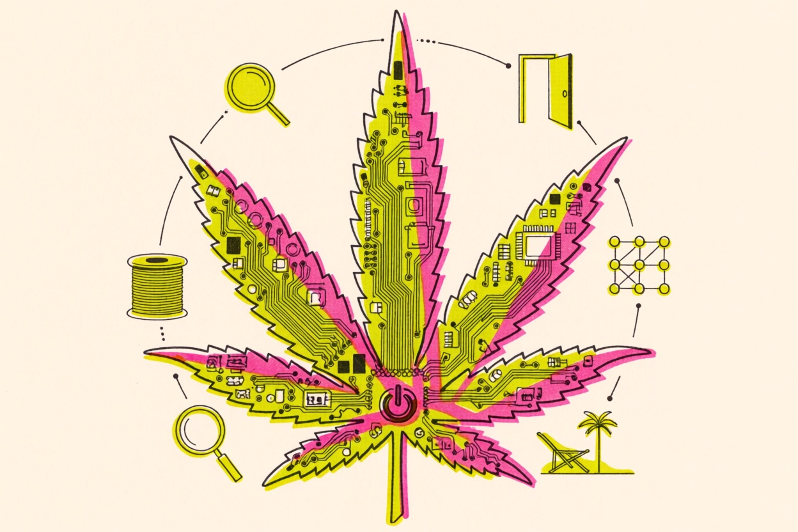
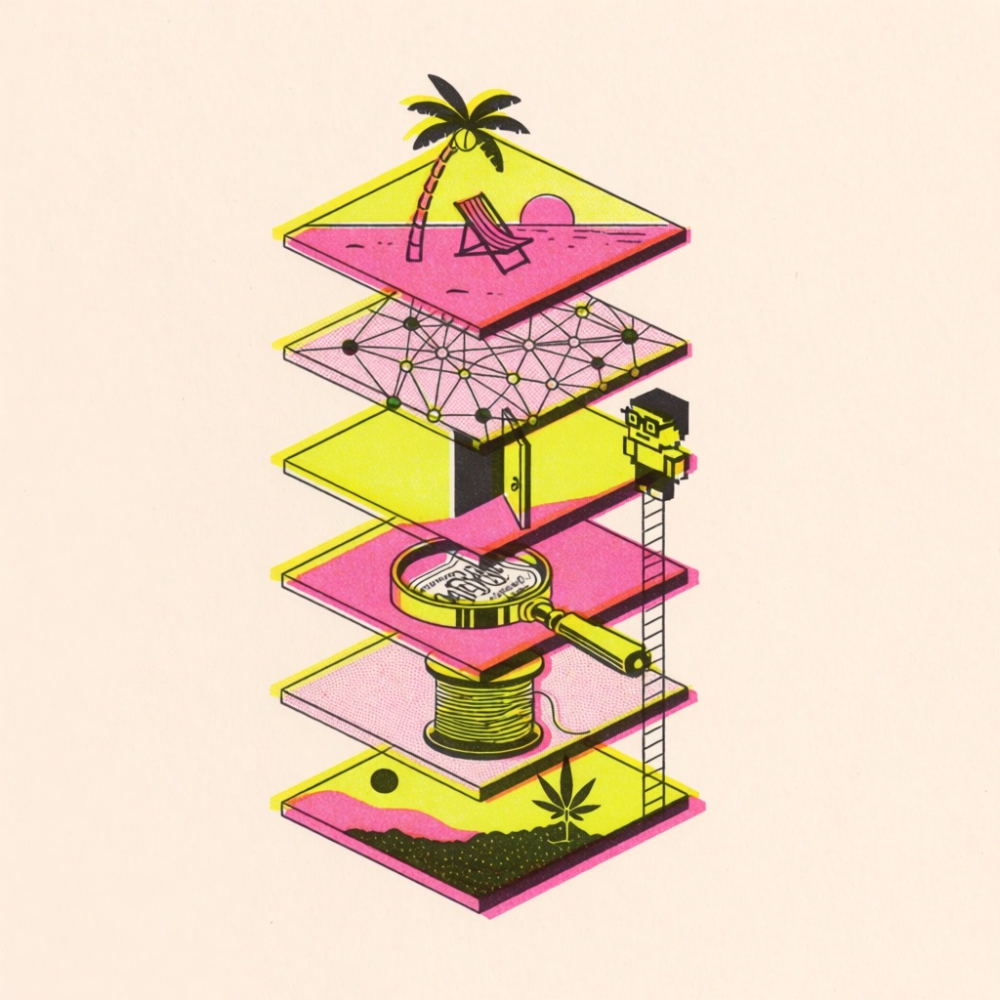
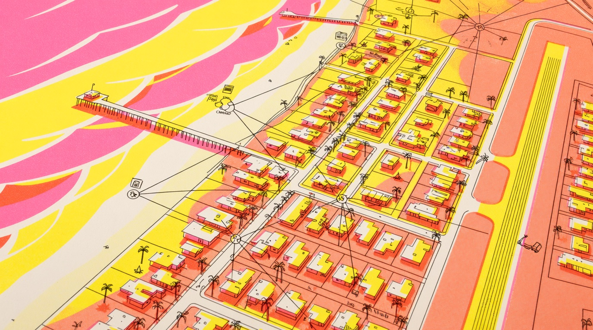

A THESIS FROM THE SOUTH BAY, TEN YEARS INTO LEGAL CALIFORNIA
Cannabis as an operating system.
We keep selling cannabis like a product: a jar, a cultivar name, a potency number. A decade into legal California, the licensed market carries 40% of the plant's consumption and almost none of its culture. Here is a different frame. Cannabis is an operating system for a place, and it is built in five layers: strands, quality, accessibility, network, lifestyle.

The Department of Cannabis Control's own estimate. The other 60% runs on the unlicensed fork.
Excise and sales tax remitted by licensed retailers, per the Governor's office on September 2, 2026.
Most of the new total-THC standard takes effect December 11, 2026, after a thirty-day delay signed September 2.
State-licensed medical cannabis moved to Schedule III in April 2026. Adult-use is still in the hearing record.
01 / THE CASE
A product is a thing you sell. An operating system is a thing other people run on.
Walk into a licensed store in Los Angeles County and the plant is presented as a catalog: cultivar names, THC percentages, a wall of jars ranked by potency. That is the product frame, and it has had ten years. The result is a licensed market with 40% of the plant's consumption in the state that legalized it first. The product frame is not losing on quality. It is losing because it is the wrong abstraction.
An operating system is the layer between the hardware and the things people actually want to do. It schedules, it allocates, it hides complexity, and it exposes a small set of dependable calls that applications can trust. Nobody buys an operating system for its own sake. They buy the afternoon it makes possible.
Cannabis, treated honestly, is that layer. The hardware is the plant and the place. The applications are sleep, a slow dinner, a walk to the water, a record on a Friday, a body that recovers after a match. The question for an operator, a town, or a brand is not which jar to sell. It is what has to be true for those applications to run reliably, for adults, at a price that beats the fork.
02 / THE FIVE LAYERS
Five layers, one afternoon.
Read them bottom up. Each is a dependency of the one above it, and each is where a real operator is either doing the work or faking it.

- 01
Strands. The kernel.
The scheduler decides what gets to run. Strands are the effects a person is actually trying to schedule: sleep, recovery, focus, company, ceremony. Building around strands means chemotype and dose come first and the cultivar name comes last. It also means saying, in plain words, which strand a product is for and which it is not.
- 02
Quality. The drivers.
Drivers are what let software trust hardware. In cannabis that is the test result, the honest label, the milligram that is actually in the can, the harvest date, and the absence of anything that should not be there. Quality is not a premium tier. It is the layer that makes every other promise possible, and it is the layer the unlicensed fork skips.
- 03
Accessibility. The interface.
An operating system nobody can log into is a research project. Accessibility is low-dose formats, a beverage instead of a rig, a price within reach of the fork's price, a counter within a walk, language a first-timer can read without a glossary, and a legal channel in the towns that still say no. More than half of California's cities and counties do not license retail. The interface is missing where most people live.
- 04
Network. The protocols.
No single company owns an operating system's protocols; that is what makes them protocols. The cannabis network is farmers, kitchens, labs, drivers, corner shops, budtenders, and now open registries and collectives. Interoperability beats vertical integration. A node should be able to join with a test result and a handshake, not a private equity check.
- 05
Lifestyle. The applications.
This is the only layer a person ever touches on purpose. A Friday. A patio. A pickleball morning that does not hurt the next day. A vinyl side. A walk to the water. The system is judged entirely by its applications, and the applications only run when the four layers beneath them hold. Lifestyle marketing without those layers is a screenshot of a program that crashes.
03 / THE STACK
How it runs in a place.
The same five layers, written as a build order for a town, a brand, or a collective. Hardware at the bottom, the afternoon at the top.
Soil, sun, a licensed farm, a kitchen, and the town where the afternoon happens. Southern California has more of this hardware than anywhere on earth and treats most of it like a liability.
Effect first: rest, recovery, focus, company, ceremony. Name the strand on the front of the package and let the cultivar live on the back.
Tested, labeled, dated, dosed. The can says five milligrams and contains five milligrams. Every promise above this line borrows its credibility from here.
A beverage, a low dose, plain language, a fair price, and a counter a person can reach without planning a trip. Where the interface is closed, the fork is the interface.
Open handshakes between nodes: a test result in, a receipt out, no gatekeeper in the middle. The only durable network is one no single company or town can switch off.
Nobody buys an operating system. They buy the afternoon it makes possible.
Which is why the layers underneath the afternoon are the whole business, and the afternoon is the only thing worth advertising.

04 / THE DOUBT
Where the metaphor breaks.
A frame this tidy deserves three hard objections. Each one is a fact, not a feeling.
The federal kernel is being rewritten while it runs.
State-licensed medical cannabis moved to Schedule III in April 2026. The adult-use hearing closed July 15 and the DEA's own post-hearing brief argued for Schedule III, but the recommendation is still pending. The hemp definition flips to total THC in December. Every layer above is building on a kernel that changes underneath it, mid-execution.
Sixty percent of users run the unlicensed fork, and the fork is faster.
A system that loses to its own fork on price and availability has a distribution problem, not a branding problem. The licensed stack pays roughly 27 to 38% in combined taxes at the register; the fork pays none. No amount of lifestyle photography closes a thirty-point price gap.
A place can refuse to install it.
California cities and counties can ban commercial cannabis outright, and most have. In 2022 the industry tried to force storefront measures onto South Bay ballots, including El Segundo's. An operating system that a majority of towns decline to install is, in practice, a network of islands.
05 / FIELD NOTE · EL SEGUNDO, SEPTEMBER 2026
Why write this from El Segundo.
El Segundo is a small beach town at the south end of Los Angeles International Airport: a refinery on one side, aerospace on the other, a Main Street in between, and the Pacific at the end of the road. I run a broadcast from here, and I work with a hemp seltzer brand in Massachusetts whose entire category is scheduled to change in December. Both jobs make the same point. The afternoon is the product. Cannabis is what the afternoon runs on.
- HARDWARESouthern California already has the applications installed.
The beach walk, the patio, the pickleball morning, the backyard dinner. Every lifestyle app the industry wants to advertise is already running here, on nothing. The system only has to be good enough not to crash them.
- INTERFACEThe counter is a drive, not a walk.
Whatever any one town's code says this year, licensed retail in most of the South Bay is something you get in a car for. A hemp seltzer, meanwhile, could reach a front door by mail in much of the country. California closed that door for its own residents in 2024, and Congress closes it nationally in December. Accessibility was solved by the wrong layer, and is now being unsolved.
- DRIVERSQuality is the only thing a seltzer brand actually sells.
A five-milligram can is a dosing instrument. The whole value is that the number is true, the ingredient list is short, and the can tastes like something an adult would order twice. I have watched a small team spend a summer on nothing else. That is driver engineering.
- PROTOCOLSThe network is being built on a ledger, not a roll-up.
Around here the interesting experiments are open registries: collectives inside a 25-mile radius, countersigned receipts, small treasuries that hold no plant-touching assets. Not because a chain fixes cannabis, but because a protocol is the only kind of network a majority of towns cannot ban.
- KERNELStrands are what the neighbors ask for.
Nobody on my street has ever asked me for a cultivar. They ask for something to sleep, something for a sore shoulder, something for a dinner that will not turn into a night. Those are strands. The product frame has never once answered them.
EL SEGUNDO LEDGERAS OF SEPTEMBER 2026
- Lifestyle applications installed
- All of them, free, running on the beach and the weather
- Share of the plant on the licensed stack
- 40% statewide, per the Department of Cannabis Control
- Combined tax at a licensed register
- Roughly 27 to 38% depending on the city
- Cities and counties licensing retail
- Fewer than half
- Hemp beverage by mail
- Closed in California since 2024; closes federally December 11, 2026
- Federal status of the kernel
- Medical on Schedule III; adult-use pending an administrative recommendation
The afternoon is free. The system that is supposed to run it is taxed at a third, declined by most towns, and being rewritten in Washington. That gap is the whole thesis.
06 / THE CHANGE · A BUILD ORDER
Build the layers. Then sell the afternoon.
Seven rules we would hand to any operator, town, or collective. None of them are about a jar.
- 01
Name the strand on the front.
Rest, recovery, focus, company, ceremony. Put the cultivar on the back where the people who care can find it.
- 02
Ship the number that is in the can.
Test every lot, print the milligrams, date it. Quality is a driver, not a tier.
- 03
Design the first dose for a first-timer.
Low dose, a familiar format, plain words, no glossary at the door. The interface is for the person who has never logged in.
- 04
Price against the fork, not the shelf.
If the licensed product cannot get within reach of the unlicensed price, the interface is closed no matter how good the branding is.
- 05
Join a network with a handshake.
Open registries, countersigned receipts, a test result as the login. Do not wait for a roll-up to buy you into a system.
- 06
Sell the afternoon, and mean it.
Every piece of lifestyle media should point at a real application that the layers below actually support.
- 07
Read the kernel changelog every month.
Schedule III, the hemp definition, the local ballot. Build on what is true this quarter, not on what was true when you raised money.
07 / THE INDUSTRY NEXT READ
The industry has been shipping applications with no operating system.
For ten years the legal industry sold the top layer and hoped the rest would follow. Lifestyle brands, celebrity jars, a potency arms race. Underneath, the strands went unnamed, the quality layer became a compliance cost instead of a promise, the interface stayed closed in most towns, and the network consolidated into a few distributors that treat farmers as suppliers rather than nodes. The result is a market that generates billions in tax and still loses the majority of its own users to a fork.
The operating-system frame is not a metaphor for a pitch deck. It is a build order. Strands first, because they are what people ask for. Quality second, because nothing above it works without it. Accessibility third, because an interface nobody can reach is a demo. Network fourth, because the only durable version is one no single company or town can switch off. Lifestyle last, because it is the only layer that was ever going to sell itself.
Cannabis does not need a better jar. It needs a kernel, drivers, an interface, and a protocol. The afternoon is already here.
08 / SOURCE LEDGER
Public numbers first. One resident's notes second.
Boundary. This is a thesis, not a market report. Public figures are attributed and dated; the El Segundo notes are one resident's observation. Nothing here is legal advice, and the federal and local rules cited are changing on a schedule we have linked rather than predicted. Industry Next works with Good Feels and does not publish its figures.